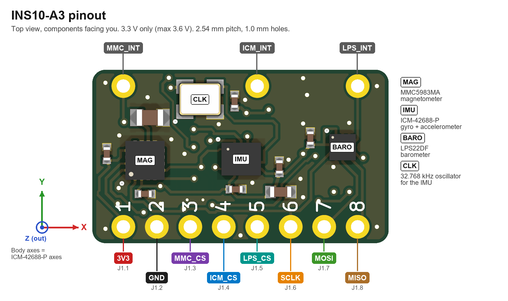
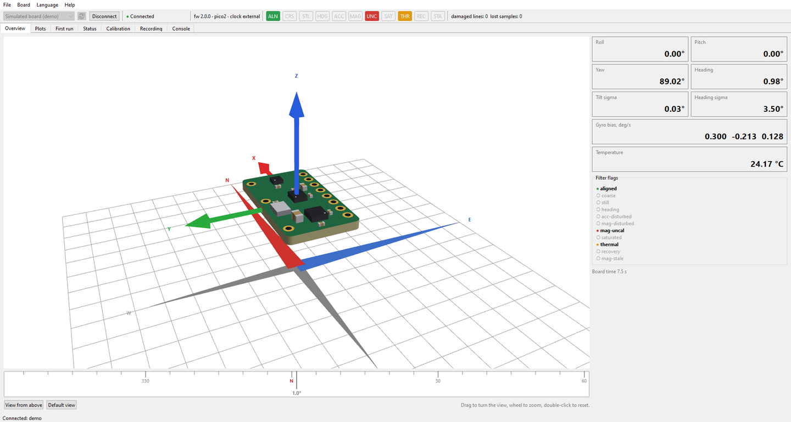
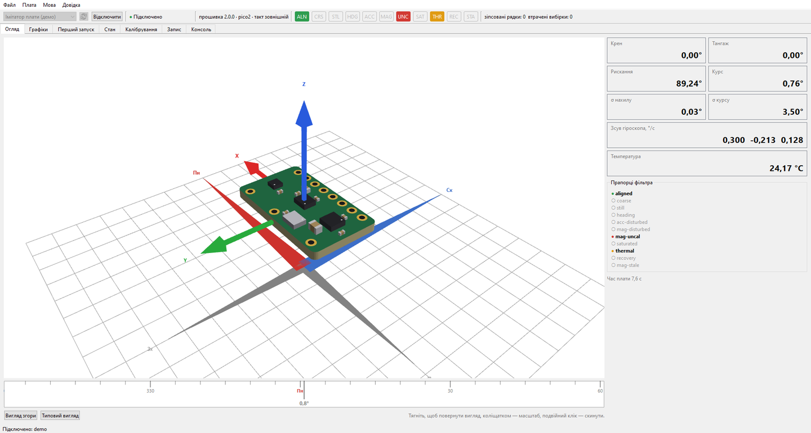
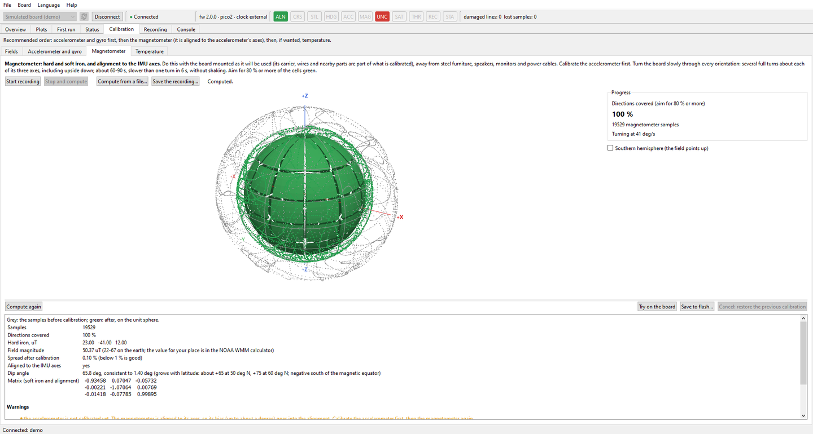
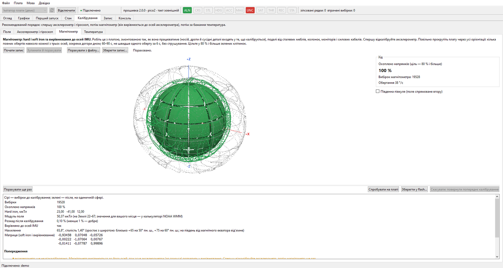
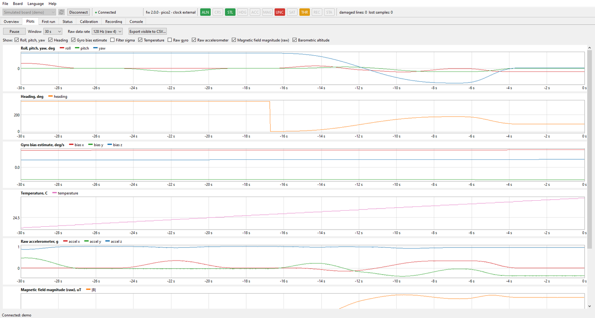
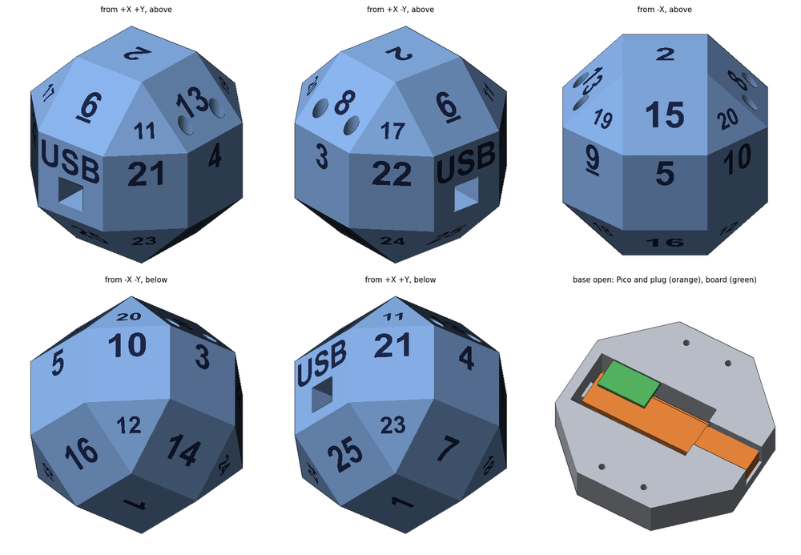
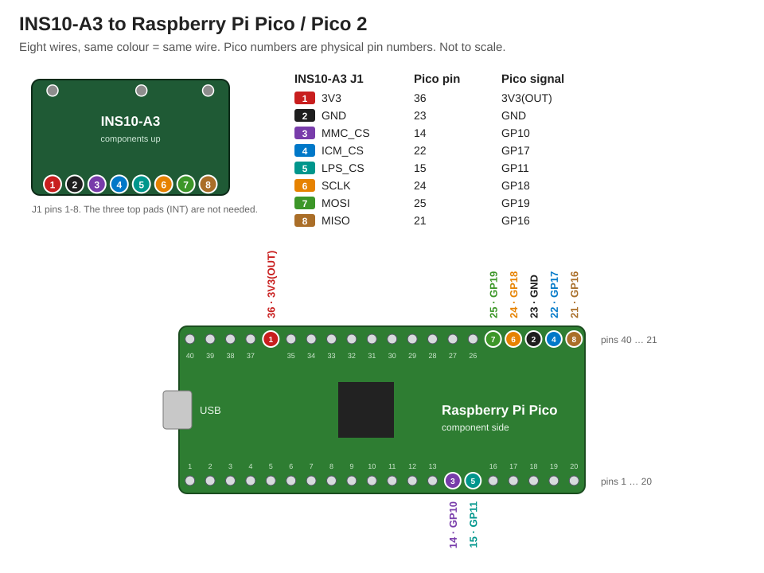

10-DoF orientation sensor · Raspberry Pi PicoДатчик орієнтації 10-DoF · Raspberry Pi Pico
Know which way is up and which way is northЗнайте, де верх і де північ
A 22.5 × 13.2 mm board with a 6-axis IMU, a magnetometer and a barometer, clocked at exactly 512 Hz. Solder 8 wires to a Pico, drop the free firmware on it, and calibrate step by step in INS10 Studio. Плата 22,5 × 13,2 мм з 6-осьовим IMU, магнітометром і барометром, тактована рівно на 512 Гц. Припаяйте 8 дротів до Pico, скопіюйте на нього безкоштовну прошивку і покроково відкалібруйте в INS10 Studio.
- ICM-42688-P
- MMC5983MA
- LPS22DF
- 32.768 kHz
- SPI · 3.3 V

Example of the firmware's $ATT line, generated in your browser.Приклад рядка $ATT прошивки, згенерований у вашому браузері.
The boardПлата
Three sensors and a clock on one SPI busТри сенсори й генератор на одній шині SPI
The IMU runs from an external 32.768 kHz oscillator instead of its internal RC clock, so its 512 Hz sample rate holds to ±25 ppm. Gyro integration and timestamps stay predictable.IMU працює від зовнішнього генератора 32,768 кГц, а не від власного RC-генератора, тож його частота 512 Гц тримається в межах ±25 ppm. Інтегрування гіроскопа й мітки часу лишаються передбачуваними.

TDK InvenSense ICM-42688-P
Gyroscope ±2000 °/s with 2.8 mdps/√Hz noise, accelerometer ±16 g with 70 µg/√Hz, 20-bit FIFO data.Гіроскоп ±2000 °/с із шумом 2,8 м°/с/√Гц, акселерометр ±16 g із 70 мкg/√Гц, 20-бітні дані FIFO.
MEMSIC MMC5983MA
Magnetometer ±8 G, 18-bit, 0.4 mG RMS noise. Built-in SET/RESET removes the bridge offset about once a second.Магнітометр ±8 Гс, 18 біт, шум 0,4 мГс СКВ. Вбудований SET/RESET приблизно раз на секунду прибирає зсув моста.
ST LPS22DF
Barometer 260–1260 hPa, ±0.5 hPa absolute accuracy, 0.34 Pa RMS noise.Барометр 260–1260 гПа, абсолютна точність ±0,5 гПа, шум 0,34 Па СКВ.
ECS-327MVATX 32.768 kHz
CMOS oscillator into the IMU's CLKIN pin: the 500 Hz setting becomes exactly 512 Hz.Генератор CMOS на вхід CLKIN IMU: налаштування 500 Гц стає рівно 512 Гц.
Firmware · free, open sourceПрошивка · безкоштовна, відкритий код
A Kalman filter that runs on the PicoФільтр Калмана, що працює на Pico
Copy one UF2 file onto a Pico or Pico 2. The firmware reads all three sensors and sends orientation over USB as plain text lines.Скопіюйте один файл UF2 на Pico або Pico 2. Прошивка читає всі три сенсори й передає орієнтацію через USB звичайними текстовими рядками.
- Extended Kalman filter on a quaternion at 512 Hz: works in every orientation, no gimbal lock.Розширений фільтр Калмана на кватерніоні, 512 Гц: працює в будь-якому положенні, без «складання рамки».
- Adaptive rejection of linear acceleration, vibration and magnetic disturbances. The magnetometer corrects heading only, never tilt.Адаптивне відкидання прискорень, вібрації й магнітних завад. Магнітометр виправляє лише курс, ніколи — нахил.
- Gyro bias tracked in real time, with a self-learned model of its temperature dependence.Зсув гіроскопа відстежується в реальному часі, а його залежність від температури прошивка вивчає сама.
- Quaternion, roll, pitch, yaw, compass heading, 1σ uncertainties and status flags up to 200 Hz, plus raw sensor streams.Кватерніон, крен, тангаж, рискання, компасний курс, невизначеності 1σ і прапорці стану до 200 Гц, а також сирі потоки сенсорів.
- Calibration stored in flash. The fusion library is portable C11 for your own microcontroller.Калібрування зберігається у flash. Бібліотека злиття даних — переносний C11 для вашого мікроконтролера.
import serial
with serial.Serial("COM5", 115200, timeout=1) as port:
port.write(b"stream att 50\n")
while True:
f = port.readline().decode().strip().split(",")
if f[0] == "$ATT":
roll, pitch, yaw, heading = map(float, f[6:10])
print(roll, pitch, heading)Reading orientation from Python. Any language with a serial port works.Читання орієнтації з Python. Підійде будь-яка мова з доступом до послідовного порту.
Desktop app · free, open sourceНастільний додаток · безкоштовний, відкритий код
INS10 Studio
See the board move in 3D, plot every signal, check the wiring automatically and calibrate with guided wizards. English and Ukrainian interface, switchable while it runs. A built-in simulator lets you try it before the module arrives.Дивіться, як плата рухається в 3D, будуйте графіки будь-яких сигналів, перевіряйте проводку автоматично й калібруйте з майстрами. Інтерфейс українською й англійською, мова перемикається на ходу. Вбудований імітатор дозволяє спробувати все ще до отримання модуля.





Screenshots show the built-in simulator. Windows 10/11; Linux and macOS build from source but are not tested yet.На знімках — вбудований імітатор. Windows 10/11; на Linux і macOS збирається із сирців, але ще не перевірялося.
CalibrationКалібрування
25 numbered faces, three wizards25 пронумерованих граней, три майстри
Print the 26-face jig, tape the module and its Pico inside, and put it down on face 1, 2, 3 and so on. About 100 g of PLA, no supports.Надрукуйте двадцятишестигранну підставку, закріпіть у ній модуль разом із Pico і кладіть на грань 1, 2, 3 і далі. Близько 100 г PLA, без підтримок.

Accelerometer and gyroАкселерометр і гіроскоп
12–25 resting faces, 3–4 s each. Bias, scale and cross-axis terms for both sensors.12–25 граней, по 3–4 с на кожній. Зсув, масштаб і перехресні зв'язки обох сенсорів.
MagnetometerМагнітометр
60–90 s of slow turning in your hand. Hard and soft iron, and the alignment to the IMU axes.60–90 с повільного обертання в руці. Hard і soft iron та вирівнювання до осей IMU.
Temperature (optional)Температура (за бажанням)
Cool the board in a fridge, let it warm up on the desk. Gyro and accelerometer bias versus temperature.Охолодіть плату в холодильнику, дайте прогрітися на столі. Зсув гіроскопа й акселерометра залежно від температури.
| Measured on one moduleВиміряно на одному модулі | BeforeДо | AfterПісля |
|---|---|---|
| Accelerometer |a| error, 23 positionsПохибка |a| акселерометра, 23 положення | 3.09 mg | 0.07 mg |
| Gyro bias drift, −12…+25 °CДрейф зсуву гіроскопа, −12…+25 °C | 0.24 °/s | 0.007 °/s |
| Accelerometer bias drift, same rangeДрейф зсуву акселерометра, той самий діапазон | 8.7 mg | 0.12 mg |
WiringПідключення
Eight wires to a Raspberry Pi PicoВісім дротів до Raspberry Pi Pico
Power from the Pico's 3V3(OUT), SPI0 on GP16–GP19, three chip selects. The interrupt pads are optional.Живлення від 3V3(OUT) Pico, SPI0 на GP16–GP19, три виводи вибору. Площадки переривань — за бажанням.

SpecificationsХарактеристики
INS10-A3
| SizeРозмір | 22.5 × 13.2 × 1.6 mm, 2.54 mm pitch holes, no mounting holesотвори з кроком 2,54 мм, без кріпильних отворів |
|---|---|
| SupplyЖивлення | 3.3 V, max 3.6 V; logic 3.3 V, not 5 V tolerantне більше 3,6 В; логіка 3,3 В, 5 В не витримує |
| InterfaceІнтерфейс | SPI, 3 chip selects, 3 interrupt outputsSPI, 3 виводи вибору, 3 виходи переривань |
| GyroscopeГіроскоп | ±2000 °/s, 20-bit, 2.8 mdps/√Hz |
| AccelerometerАкселерометр | ±16 g, 20-bit, 70 µg/√Hz |
| MagnetometerМагнітометр | ±8 G, 18-bit, 0.4 mG RMS |
| BarometerБарометр | 260–1260 hPa, ±0.5 hPa |
| IMU rateЧастота IMU | 512 Hz from a ±25 ppm 32.768 kHz oscillatorвід генератора 32,768 кГц ±25 ppm |
| Firmware outputВихід прошивки | USB serial, orientation up to 200 Hz, raw IMU up to 512 Hz, magnetometer 50 Hz, barometer 25 HzUSB-послідовний порт, орієнтація до 200 Гц, сирі дані IMU до 512 Гц, магнітометр 50 Гц, барометр 25 Гц |
| Operating temperatureРобоча температура | −40…+85 °C (sensor rating)(межа сенсорів) |
In the packageУ комплекті
- INS10-A3 module, assembled and tested (no header soldered)Модуль INS10-A3, зібраний і перевірений (без впаяної гребінки)
- Download: firmware for Pico and Pico 2, with sourceЗавантаження: прошивка для Pico і Pico 2, із сирцями
- Download: INS10 Studio for Windows, with sourceЗавантаження: INS10 Studio для Windows, із сирцями
- Download: calibration jig, STL and STEPЗавантаження: підставка для калібрування, STL і STEP
- Documentation in English and UkrainianДокументація українською й англійською
You will needЗнадобиться
- Raspberry Pi Pico or Pico 2Raspberry Pi Pico або Pico 2
- 8 short wires and a soldering iron8 коротких дротів і паяльник
- A Windows 10/11 PC for INS10 StudioПК з Windows 10/11 для INS10 Studio
- Optional: a 3D printer, 4 × M3×16 screws, thin double-sided tapeЗа бажанням: 3D-принтер, 4 гвинти M3×16, тонкий двосторонній скотч
DocumentationДокументація
Everything is in the openУсе у відкритому доступі
QuestionsПитання
Does it work with Arduino or ESP32?Чи працює з Arduino або ESP32?
The module works with any 3.3 V microcontroller that has SPI. The ready-made firmware is for Raspberry Pi Pico and Pico 2. Elsewhere you can reuse the fusion library (portable C11) and write the SPI part yourself; the datasheet lists the register settings. A 5 V Arduino Uno needs level shifters.Модуль працює з будь-яким мікроконтролером на 3,3 В із SPI. Готова прошивка — для Raspberry Pi Pico і Pico 2. На інших платах можна використати бібліотеку злиття даних (C11) і написати частину SPI самостійно; налаштування регістрів є в технічному описі. Для Arduino Uno на 5 В потрібні перетворювачі рівнів.
Do I need the 3D-printed jig?Чи обов'язкова надрукована підставка?
No. It makes the accelerometer and gyro calibration quick and repeatable. Without it, rest the module against a small box in 12 or more different orientations.Ні. З нею калібрування акселерометра й гіроскопа швидке й повторюване. Без неї спирайте модуль на невелику коробку в 12 і більше різних положеннях.
Does it give position or speed?Чи визначає він координати або швидкість?
No. It gives orientation: tilt and heading. Position needs GNSS or another reference. Like any AHRS without GNSS, it eventually takes an acceleration held for more than about 30 s for tilt.Ні. Він визначає орієнтацію: нахил і курс. Для координат потрібен GNSS або інше джерело. Як і будь-яка система орієнтації без GNSS, він зрештою сприймає прискорення, що триває понад 30 с, як нахил.
How accurate is the heading?Яка точність курсу?
In the firmware's simulation with realistic calibration residuals, heading error is 0.7° RMS. In practice the magnetic environment dominates: keep the module away from steel, motors and power cables, and calibrate it as mounted.У симуляції прошивки з реалістичними залишками калібрування похибка курсу — 0,7° СКВ. На практиці все визначає магнітне оточення: тримайте модуль подалі від сталі, двигунів і силових кабелів і калібруйте його змонтованим.
Is it safe for my project?Чи безпечний він для мого проєкту?
INS10-A3 is a development module for makers and engineers. It is not certified for aviation, medical, automotive or other safety-critical use. Use 3.3 V only; it is sensitive to static electricity and contains small parts.INS10-A3 — модуль для розробників і мейкерів. Він не сертифікований для авіації, медицини, автомобілів чи інших відповідальних застосувань. Лише 3,3 В; чутливий до статичної електрики, містить дрібні деталі.